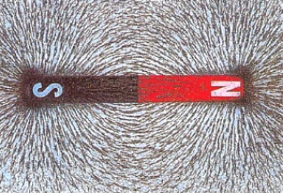
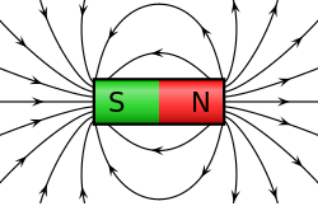
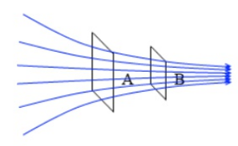
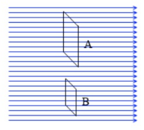
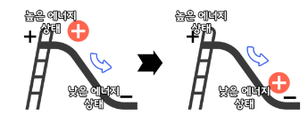
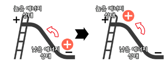
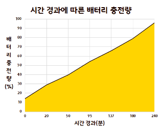
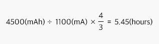

무선충전기를 만들면서,
해달이와 같이 무선충전의 원리를
알아보러 갈까요?
무선충전기의 원리는 바로 전자기 유도 현상입니다.
기존의 유선 충전은 선을 통해 전력을 공급하는데 무선 충전 모듈은 전자기 유도 현상을 이용해서 전력을 전달해요.
그렇다면 전자기 유도 현상에 대해 한 번 알아보도록 합시다.
전자기 유도의 핵심 개념은 세 가지가 있습니다.
바로 자기력선, 자기선속, 기전력입니다.
자기장(磁氣場, magnetic field)이란 자석이나 전류에 의해 자기력이 작용하는 공간이에요.
초등학교 · 중학교 과학시간에 자석에 철가루를 뿌렸을 때, 위의 그림처럼 일정한 방향으로 철가루가 정렬되는 모습을 본 적이 있죠?
이 때, 자기장은 N극에서 나와서 S극으로 들어가게 되는데 그것을 나타낸 그림이 위의 그림입니다.
자기장은 크기와 방향이 존재하며 전류의 크기와 방향이 변함에 따라 자기장의 크기와 방향도 변하게 됩니다.
쉽게 생각해서 자기력은 자석의 힘이라고 생각하면 돼요. 위 그림 중 두 번째 그림에서도 이해하기 쉽도록 자기장을 선으로 나타냈는데, 이 선을 자기력선이라고 합니다.
자석의 힘을 나타낸 선(자기장)이 자기력선이 되겠죠?
자기 선속이란, 어떤 넓이를 지나는 자기력선의 개수입니다. 줄여서 자속이라고도 해요. 그리고 자속 밀도란, 단위넓이를 지나가는 자기력선의 개수입니다.
다음 그림에서 A의 넓이가 B의 넓이의 2배라고 해봅시다.
A와 B를 지나는 자기력선의 개수는 6개로 같지만 A의 넓이가 B의 넓이의 2배이기 때문에,
자기선속은 같지만 A의 자속밀도는 B의 1/2배입니다.
A와 B를 지나는 자기력선은 일정하게 지나가지만,
A의 넓이가 B의 넓이의 2배이기 때문에,
A의 자기 선속은 B의 2배가 됩니다.
이 때, A와 B의 자속 밀도는 같습니다.
위 그림은 역학적 위치 에너지를 나타낸 그림입니다.
역학적 위치 에너지가 높은 상태에서 낮은 상태로 이동하면 일을 하게 됩니다.
위 그림은 전기적 위치 에너지를 나타낸 그림입니다.
마찬가지로, 전기적 위치 에너지가 높은 상태에서 낮은 상태에서 이동하면 일을 하게 됩니다.
여기서 낮은 전기적 위치 에너지를 가진 상태에서 높은 전기적 위치 에너지를 가진 상태로 전하를 이동시키는데 필요한 일을 기전력이라고 합니다.
전압이라고도 하고, 단위는 볼트 [V]를 사용합니다.
전자기 유도는 자기장이 변하는 곳에 있는 도체에 기전력 (전압)이 발생하는 현상을 말해요.
자석을 코일에 가까이 하거나, 멀리할 때 자속 밀도에 변화가 생기게 됩니다. 이 때 변화가 일어나는 반대 방향으로 유도 전기력이 발생하게 되고, 이로 인하여 전류가 흐르게 됩니다.
현재 주로 쓰이는 무선 충전 방식에는 자기공명 방식과 자기유도 방식이 있습니다.
특정 주파수로 진동하는 자기장을 만들어, 같은 공진 주파수를 가진 코일에 자기장을 유도해 전력을 전달해요.
먼 거리에서도 충전이 가능하고, 한 번에 여러 기기를 충전할 수도 있어요.
하지만 인체유해성 논란 등이 있어 요즘은 거의 쓰이지 않아요.
'자기장이 변하면 기전력이 발생한다'는 마이클 패러데이의 전자기 유도를 이용해 전력을 전달해요.
Qi라는 국제 표준 규격이 있고, 대부분의 무선충전기가 자기유도방식을 사용해요.
한 번에 큰 전력을 전송할 수 있고, 충전 효율이 좋아요.
전자파가 거의 발생하지 않아 인체에 무해해요. 우리 DIY무선 충전기도 자기유도 방식이랍니다 !
충전기 내에 있는 코일이 `송신 코일`
휴대폰 내부에 있는 코일이 `수신 코일`
충전기 안에 있는 송신 코일이 신호를 보내서,
스마트폰의 수신 코일을 찾습니다.
수신 코일이 있다고 판단하면, 전자기 유도가 시작됩니다.
송신 코일 내부에 전류가 흐르고, 자기장이 발생됩니다.
송신 코일에서 발생된 자기장을 수신 코일에서 감지합니다.
수신 코일 내부에서 전류가 흘러 스마트폰의 배터리를 충전합니다.
배터리 충전시간을 계산하려면, 배터리의 용량과 충전기의 출력 용량을 알아야 해요.
우리가 같이 만든 무선충전기는 1100mAh 출력이에요.
가지고 있는 휴대폰 배터리의 정보를 찾아볼까요?
갤럭시 S21 5G의 용량은 4500mAh, 고속충전(9W)을 지원해요.
충전시간은 4500mAh를 충전기 출력 용량인 1100mA로 단순하게 나누면 이론적으로는 약 4.1시간 정도 걸린다는 사실을 예측해볼 수 있어요.
실제로 갤럭시 S10 5G 모델을 충전하면서 시간에 따라 충전율을 표시해보았더니 다음과 같이 나타났어요.
14퍼센트에서 시작해서 약 240분(=4시간) 정도 걸리는 걸 확인할 수 있었어요.
제품의 충전 효율이 75퍼센트이기 때문에 충전 효율까지 고려했을 때 0퍼센트부터 충전한다면
약 5시간 정도 걸리겠네요!
배터리 작동 전압, 배터리 노화 정도에 따라 실제 충전 시간은 바뀔 수 있다는 점 꼭 기억해 주세요!